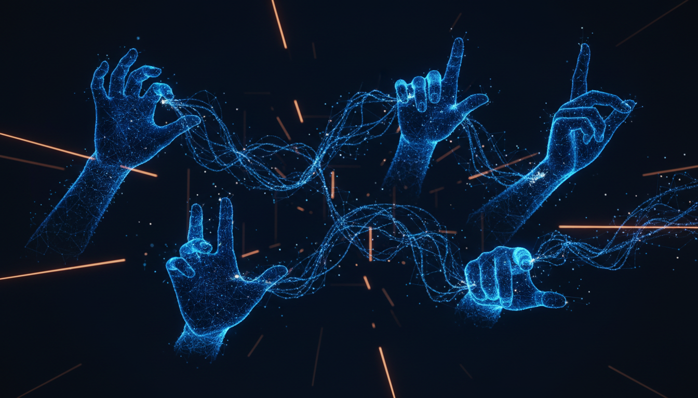
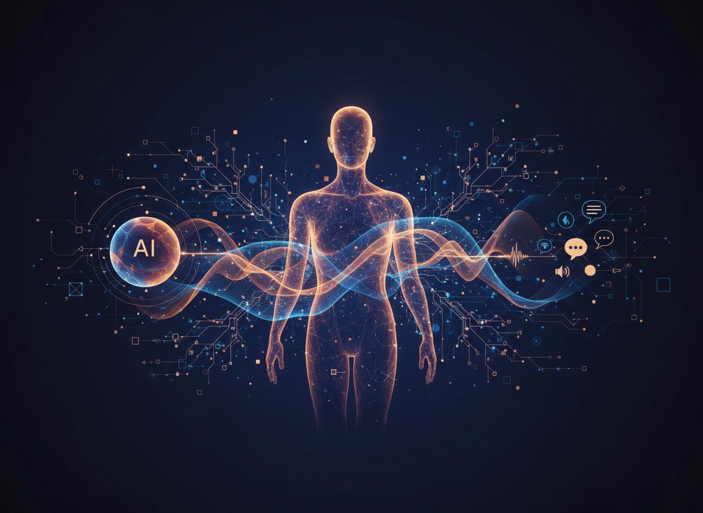
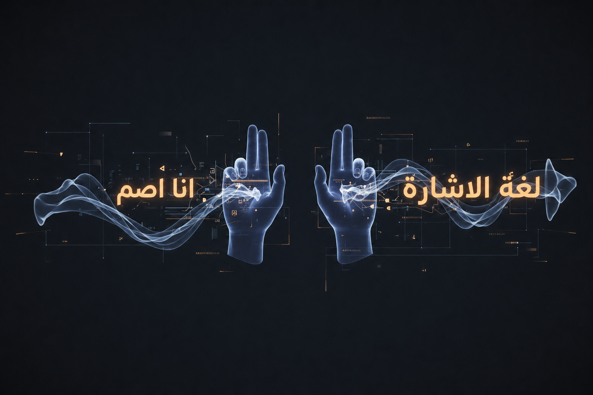
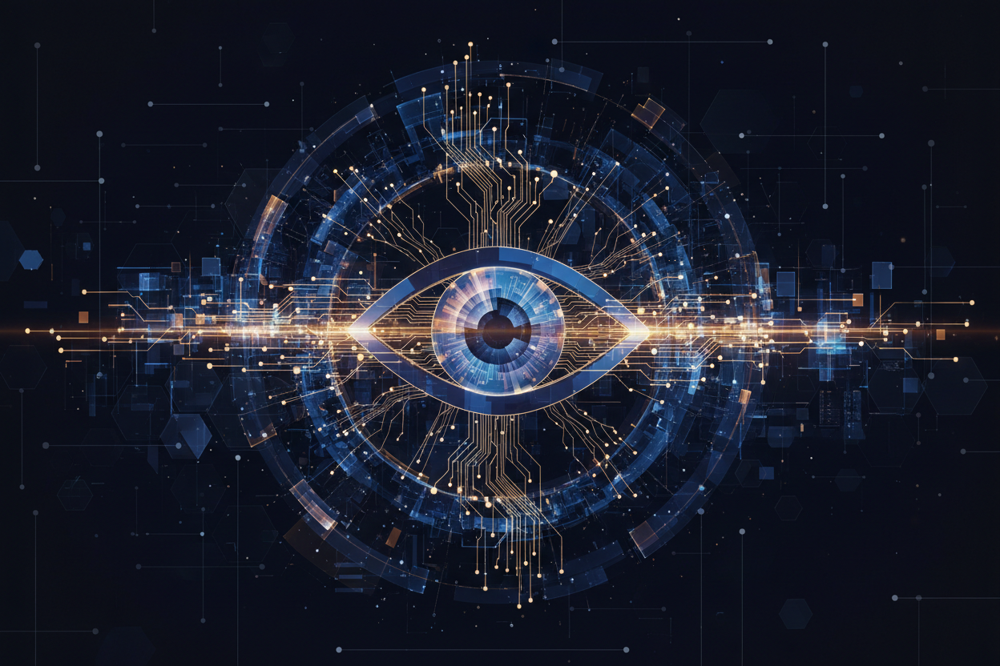

Gesture Recognition
Detects hand shapes, movement, facial expression, and signing tempo with confidence scoring.
Computer vision
Real-time sign language recognition and translation for classrooms, clinics, service desks, and public-sector teams that need communication to feel immediate.

SignSense combines computer vision, multimodal language models, and Arabic sign language research to detect gestures, interpret context, and deliver readable translations in real time.
The platform is shaped for everyday environments: a reception desk, a lecture hall, a telehealth appointment, or a government service counter where communication needs to be fast and respectful.
Each module can stand alone or connect through a shared API for teams building accessible digital and physical services.
Detects hand shapes, movement, facial expression, and signing tempo with confidence scoring.
Computer vision
Converts recognized signs into Arabic or English text streams for service teams and captions.
Sign to text
Embeds translation into kiosks, dashboards, web apps, and call-center tools through a clean API.
API integrationSign language carries meaning through hands, face, posture, motion, and timing. The technology layer reads those signals together.
Pose estimation, hand tracking, and temporal recognition tuned for signing movement.
Context-aware translation that keeps sentence intent readable for hearing teams.
Dataset pipelines designed for annotation quality, review, and domain adaptation.
Optimized inference paths for kiosk, browser, and edge-device deployments.
Tathleel is led by Dr. Hamzah Luqman, founder and CEO, and informed by work from the Arabic Sign Language Processing Lab at KFUPM. The goal is practical accessibility technology with research-grade care.
Share where SignSense could help: education, healthcare, public service, research partnerships, or enterprise integration.